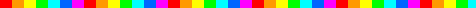

Antes de hacer clic
Tres reglas: si un sitio te pide crear una cuenta, hazlo con una persona adulta. No compartas tu nombre completo, tu escuela, tu dirección ni fotos. Y si algo te hace sentir incómodo, cierra la página y cuéntalo.
Los marcados con [CUENTA] tienen funciones que piden registrarse, aunque muchas se pueden probar sin hacerlo.
Programar
- Scratch
- Programa juegos e historias con bloques. El siguiente paso después de nuestro taller. [CUENTA]
- Code.org
- Cursos cortos para empezar a programar.
- freeCodeCamp
- Lecciones gratuitas de desarrollo web, en español. [CUENTA]
- MDN
- La referencia de HTML, CSS y JavaScript que usan los profesionales.
Ciencia y espacio
- PhET
- Simuladores de física, química y biología de la Universidad de Colorado. Si te gustó nuestro laboratorio, aquí hay muchos más.
- NASA Space Place
- Juegos y explicaciones del espacio, en español.
- Ciencia de la NASA
- Noticias y misiones, en español.
- Stellarium Web
- Un planetario en tu navegador. Pon tu ciudad y mira qué hay en el cielo esta noche.
- Google Earth
- Vuela por el planeta. Busca los cráteres del Pinacate.
- Simulador de circuitos
- Arma un circuito y mira correr la electricidad. En inglés.
Matemáticas
- Khan Academy
- Videos y ejercicios gratuitos de matemáticas y ciencias. [CUENTA]
- GeoGebra
- Dibuja gráficas y figuras, y muévelas para ver qué cambia.
- WolframAlpha
- Hazle preguntas de matemáticas y ciencia. En inglés. Úsalo para comprobar, no para copiar.

Sonora y México
- Naturalista
- Toma una foto de una planta o un bicho e identifícalo con una comunidad de naturalistas. [CUENTA]
- EncicloVida
- Enciclopedia de las especies de México.
- Cuéntame de México
- Datos de México y de tu estado, del INEGI, explicados de forma sencilla.
- Servicio Meteorológico Nacional
- El clima de verdad. Compáralo con lo que mides en la escuela.
- Áreas Naturales Protegidas
- Los espacios naturales protegidos de México, como El Pinacate.
- Instituto Sonorense de Cultura
- Información sobre cultura en Sonora.
Crear
- Piskel
- Haz tus propios dibujos pixelados y GIF animados, como los de este sitio.
- Chrome Music Lab
- Experimentos para jugar con el sonido, el ritmo y las ondas.
- Tinkercad
- Diseña objetos en 3D y circuitos virtuales. Necesita registro: hazlo con tu docente. [CUENTA]
- Wikimedia Commons
- Millones de imágenes para reutilizar, respetando su licencia. De ahí salieron las fotos de consulta de este sitio.
Jugar pensando
- Lichess
- Ajedrez gratis y sin anuncios, con problemas para practicar. Si ya le ganaste a nuestra computadora, aquí sigue. [CUENTA]
- Wikipedia
- Juego: abre un artículo al azar y llega a "Hermosillo" usando solo enlaces. Para tareas, revisa también sus fuentes.